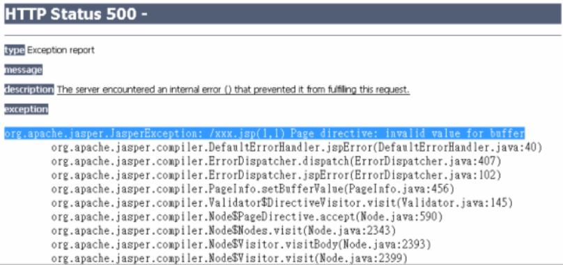
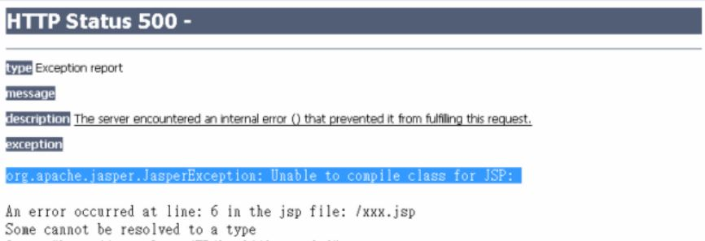
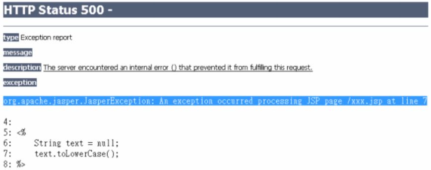

JSP 終究會轉譯為 Servlet，所以錯誤可能發生在三個時候：
JSP 轉換為 Servlet 原始碼時
如果在 JSP 頁面中撰寫了一些錯誤語法，而使得容器在轉譯 JSP 時不知道該怎麼將那些語法轉譯為 Servlet 的.java檔案，就會發生錯誤。例如，在
page指令元素中指定了錯誤的選項，像是buffer屬性指定錯誤：<%@page contentType="text/html" buffer="16"%>實際上指定
buffer屬性時必須指定單位，例如"16kb"。如果你直接將這個 JSP 檔案放到容器上，在請求 JSP 時容器無法轉譯，在 Tomcat 下就會出現類似以下的畫面錯誤：容器通常會提示無法轉譯的原因，確定是否為這類錯誤的一個原則，就是查看上圖中反白區段，通常會是告知語法不合法的訊息。
如果你使用整合開發工具（IDE），有檢查 JSP 語法的功能的話，在編輯器上就可以直接看到錯誤語法的提示。若初學者在沒有 JSP 語法檢查功能的編輯器上撰寫 JSP，就很容易遇到這種錯誤。
Servlet 原始碼進行編譯時
如果你的 JSP 語法沒有問題，則容器可以將 JSP 轉譯為 Servlet 的 .java 程式，接著就會嘗試將 .java 編譯為 .class 檔案，如果此時編譯器因為某個原因而無法完成編譯，則會出現編譯錯誤。
例如，你的 JSP 中使用了某些類別，但部署至伺服器時，忘了將相關的類別也部署上去，使得初次請求 JSP 時，雖然轉譯可以完成，但編譯時就會出錯，此時（在 Tomcat下）就會出現類似以下的畫面錯誤：
這個錯誤訊息比較容易確認，例如使用 Tomcat 容器的話，若出現 “Unable to compile” 之類的訊息，通常就是在編譯階段發生了錯誤。
如果你使用整合開發工具（IDE），有檢查 JSP 語法的功能的話，在編輯器上可能會看到編譯方面的錯誤提示。但有時會像這邊舉的例子，開發階段與部署階段的運行環境不同，而使得找不到類別的情況發生時，使得部署後請求 JSP 時出現這類的錯誤。
Servlet 載入容器進行服務但發生執行時期錯誤時
如果 Servlet 進行編譯成功，接下來就可以載入容器開始執行，但仍有可能在執行時期因找不到某個資源、程式邏輯上的問題而發生錯誤。例如最常見的
NullPointerException就是一個例子。執行時期的錯誤訊息也比較容易確認，例如使用 Tomcat 容器的話，若出現 “An exception occurred processing JSP page” 之類的訊息，通常就是執行時期發生了錯誤。
這類錯誤由於是執行時期錯誤，整合開發工具檢查不出來。雖然容易確認是執行時期錯誤，但執行時期的錯誤可能原因就非常多了，此時你對例外繼承架構與處理方式是否了解，以及如何善用例外的堆疊追蹤（Stacktrace）來找出原因，就非常重要了。
你可以自訂執行時期例外發生時的處理頁面，只要使用 page 指示元素時，設定 errorPage 屬性來指定錯誤處理的 JSP 頁面。例如：
add.jsp
<%@page contentType="text/html"
pageEncoding="UTF-8" errorPage="error.jsp"%>
<!DOCTYPE html>
<html>
<head>
<meta charset="UTF-8">
<title>加法網頁</title>
</head>
<body>
<%
String a = request.getParameter("a");
String b = request.getParameter("b");
out.println("a + b = " +
(Integer.parseInt(a) + Integer.parseInt(b))
);
%>
</body>
</html>
這是一個簡單的加法網頁，從請求參數中取得 a 與 b 的值後進行相加。如果有錯誤時，你想要直接轉發至 error.jsp 顯示錯誤，則該 JSP 頁面 isErrorPage 屬性設定為 true 即可。例如：
error.jsp
<%@page contentType="text/html" pageEncoding="UTF-8"
isErrorPage="true"%>
<%@page import="java.io.PrintWriter"%>
<!DOCTYPE html>
<html>
<head>
<meta charset="UTF-8">
<title>錯誤</title>
</head>
<body>
<h1>網頁發生錯誤：</h1><%= exception %>
<h2>顯示例外堆疊追蹤：</h2>
<%
exception.printStackTrace(new PrintWriter(out));
%>
</body>
</html>
exception 物件是 JSP 的隱含物件，由 add.jsp 丟出的例外物件訊息就包括在 exception 之中，而且只有 isErrorPage 設定為 true 的頁面才可以使用 exception 隱含物件。
在這個 error.jsp 中的標題上，只是簡單地顯示 exception 呼叫 toString() 之後的訊息，也就是 <%=exception%> 顯示的內容；另外也可將例外堆疊追蹤顯示出來。printStackTrace() 接受一個 PrintWriter 物件作為參數，所以你使用 out 隱含物件建構 PrintWriter 物件，然後再使用 exception 的 printStackTrace() 方法來顯示例外堆疊追蹤。
如果在存取應用程式的時候發生了例外或錯誤，而你沒有在 Servlet/JSP 中處理這個例外或錯誤，則最後會由容器加以處理，一般容器就是直接顯示例外訊息與堆疊追蹤訊息。如果希望容器發現這類例外或錯誤時，可以自動轉發至某個 URL，則可以在 web.xm l中使用 <error-page> 進行設定。
例如，若想要在容器收到某個類型的例外物件時進行轉發，則可以在 <error-page> 中使用 <exception-type> 指定：
<web-app …>
<error-page>
<exception-type>java.lang.NullPointerException</exception-type>
<location>/report.view</location>
</error-page>
</web-app>
如果你要在 <location> 中設定的是 JSP 頁面，則該頁面必須設定 isErrorPage 屬性為 true，才可以使用 exception 隱含物件。
如果想要基於 HTTP 錯誤狀態碼轉發至處理頁面，則是搭配 <error-code> 來設定。例如在找不到檔案而發出 404 狀態碼時，希望都交由某個頁面處理：
<web-app …>
<error-page>
<error-code>404</error-code>
<location>/404.jsp</location>
</error-page>
</web-app>
這個設定，在自行使用 HttpServletResponse 的 sendError() 送出錯誤狀態碼時也有作用，因為 sendError() 只是告知容器，以容器的預設方式或 web.xml 中的設定來產生錯誤狀態碼的訊息。